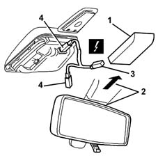

5050B66 rain sensor electronic unit cover - r r
- Path
- Procedures > 50 AUXILIARY UNITS > 5050 SCREEN WASHERS AND HEADLAMP WASH/WIPE > 5050B windscreen wash/wipe > 5050B66 rain sensor electronic unit cover - r r
- Kind
- repair procedure (removal / refitting; the operation number is the code)
- Applies to
- all engines; all production periods
- Interactive page
- https://sloeber94.github.io/elrnDB-lYpsln/en/#/2429353
Applies to: all engines; all production periods
 Removing
Removing
 Refitting
Refitting1. Remove the cover.
2. Release the interior rear view mirror pushing it upwards.
3. Disconnect the electrical connection.
 | Name | Connector |
|---|---|---|
3 | Rain, dusk and misting sensor |
4. Disconnect the electrical connection from the sensors.

Applies to: all engines; all production periods
Refitting
RemovingCheck that the cover is not damaged.
Connect the electrical connections .
Fit the rear view mirror.
Fit the cover.